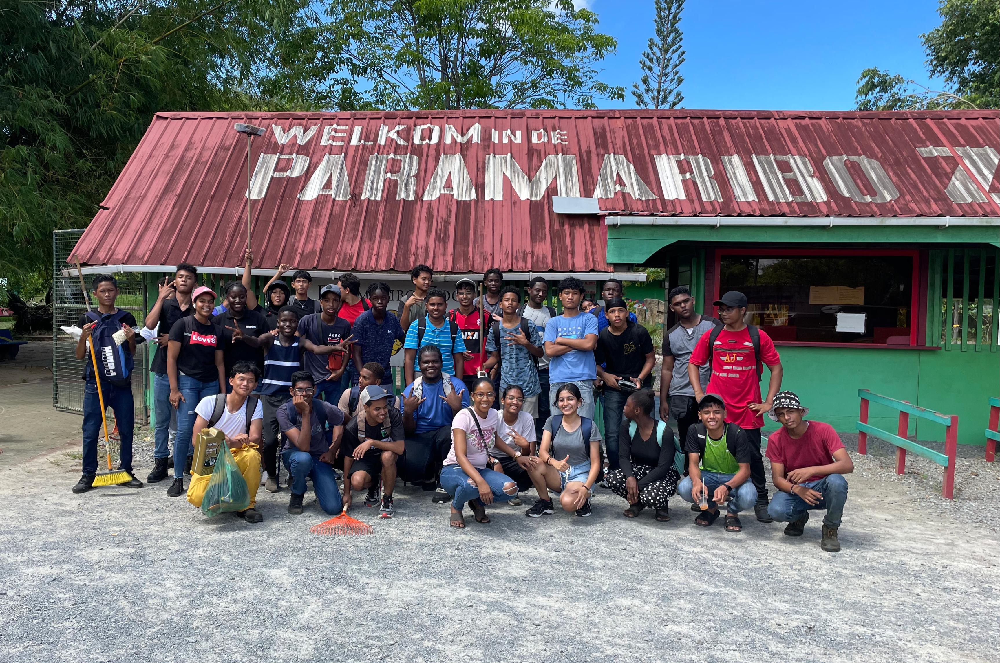
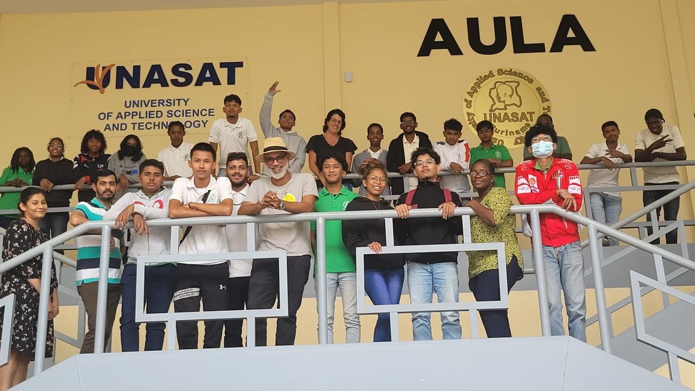
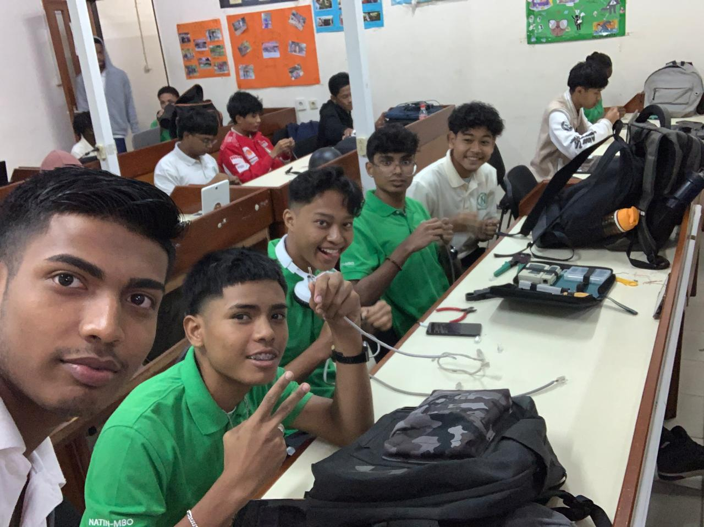

WELCOME TO MY PORTFOLIO
Ik ben een leergierig student op het Natin-ICT. Naast mijn studie heb ik hobby's zoals voetballen adventure enz verder ben ik heel erg enthousiast om nieuwe vaardigheden. In mijn vrije tijd ben ik vaak bezig met mijn hobby of monteuren.Voor monteuren heb ik een ook pasie net als ICT.Verder ben ik overall een leergierig persoon ik 17 jaar jong en ik wil later mijn eigen bedrijf opstarten.
HTML (HyperText Markup Language) is de standard taal voor het maken van webpagina's, essentieel voor de structuur en inhoud van websites. Op Natin-ICT heb ik HTML geleerd en toegepast in projecten, waaronder het bouwen van websites en het structureren van webinhoud. Deze ervaring heeft mijn vaardigheden in webontwikkeling aanzienlijk verbeterd. CSS (Cascading Style Sheets) is de taal die wordt gebruikt om de stifl en lay-out van webpagina's te definiëren, essentieel voor het ontwerp en de visuele presentatie van websites. OpNatin-ICT heb ik CSS geleerd en toegepast in projecten, waaronder het ontwerpen van aantrekkelijke en responsieve webpagina's. Deze ervaring heeft mijn vaardigheden in webdesign en front-end ontwikkeling versterkt. JavaScript is een krachtige programmeertaal die webpagina's interactief en dynamisch maakt, essentieel voor moderne webontwikkeling. Op Natin-ICT heb ik JavaScript geleerd en toegepast in projecten, zoals het toevoegen van interactieve elementen en het verbeteren van de gebruikerservaring op websites. Deze ervaring heeft mijn vaardigheden in front-end ontwikkeling en programmeren aanzienlijk verbeterd Als onderdeel van een
burgerschapsproject hebben Natin-ICT
studenten op 8 december 2023 de
Paramaribo Zoo schoongemaakt.
Gewapend met handschoenen, vuilniszakken en prikkers hebben we verschillende gebieden van het dierentuin schoongemaakt van zwerfvuil. Dit initiatief heeft niet alleen bigedragen aan een schonere leefomgeving voor de dieren, maar ook het milieubewustzin bij
bezoekers bevorderd. Het boeiende verhaal van Milton Tuart, vastgeleg door de getalenteerde studenten van NATIN ICT - AV nameljk :
Joey Wongsowinangoen,Ashray Lalta en
Jessé Pinas in het kader van het
Minikronieken-project. Laat je meenemen in het leven van deze inspirerende persoon en deel in de unieke ervaring van de studenten tidens het filmen. Een waardevol project dat de kracht van verhalen vertellen benadrukt.
Het ICT-consultancyproject, waarbij ons team een klein LAN-netwerk heeft opgezet voor een bedrif en hen heeft voorzien van de beste computers en software. Het project werd uitgevoerd door een team van vier studenten, inclusief mijzelf, als onderdeel van onze studie aan Natin-ICT., waarbij ons team een klein LAN-netwerk heeft opgezet voor een bedrif en hen heeft voorzien van de beste computers en software. Het project werd uitgevoerd door een team van vier studenten, inclusief mijzelf, als onderdeel van onze studie aan Natin-ICT.Programmeertalen
HTML
CSS
JavaScript
Projecten
Bugerschap project

Minikronieken project

ICT-consultancyproject

Contact